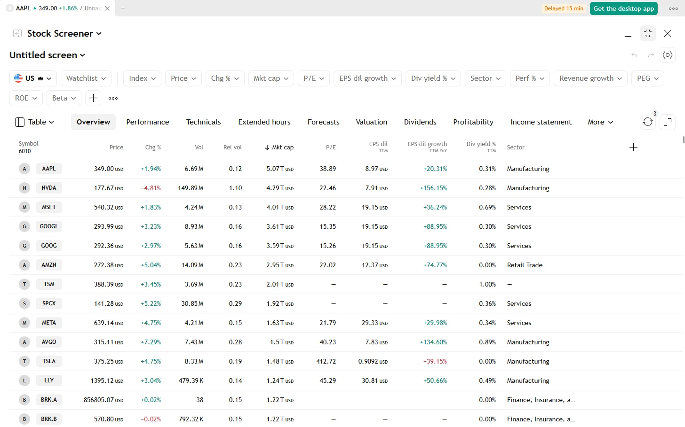
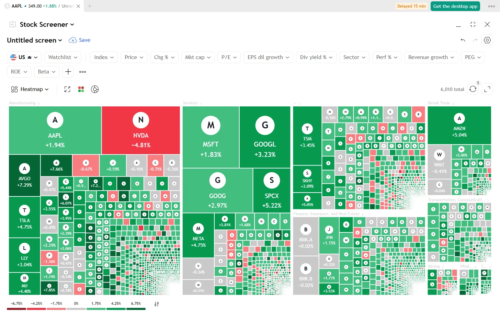

A free stock screener for US stocks.
Filter about 6,000 US stocks by price, performance, technicals, valuation, growth or dividends. Read the results as a table, as charts or as a heatmap, save the screen and get an alert when a stock enters it.

Find the stocks that match your idea
Pick filters, sort by any column, and the list stays up to date while you work. Everything below is in the free app, with no account.
Filters in eight groups
Security info, market data, technicals, financials, valuation, growth, margins and dividends. Sector, industry, index, gap, relative volume, performance, volatility, beta, RSI, moving averages, P/E, PEG, ROE, revenue growth, dividend yield and more.
About 100 columns
Choose your columns or start from a set: Overview, Performance, Technicals, Extended hours, Forecasts, Valuation, Dividends, Profitability, Income statement, Balance sheet, Cash flow, Per share.
Table, charts or heatmap
The charts view shows up to 16 small charts at once, with moving averages and volume. The heatmap groups the stocks by sector, sized and coloured by the column you choose.
Ready-made screens
Start from a popular screen such as most capitalized, bullish and undervalued, or stocks that doubled, then change the filters.
Saved screens and alerts
Save your screens, rename and copy them. Add an alert on a saved screen and know when a stock enters or leaves it.
Screen with an indicator
The script screener runs any indicator, or your own script, over an index or a watchlist, on intervals from 1 minute to 1 month. Filter on its values and signals, such as bars since a cross.
ETF screener
A second screener for ETFs, with its own columns and a risk set.
Export
Download the results as a CSV file, up to 30,000 rows, or save the symbols of a script screen as a watchlist.
Heatmap view
See the whole market at a glance: one tile per stock, grouped by sector, sized by market cap and coloured by the day's change, or by any other column.

Questions
Is the stock screener free?
Yes. The screener is part of the free, open-source app. There is no paid tier, no account and no limit on saved screens.
Which markets can I screen?
US stocks, about 6,000 of them, and US ETFs in the ETF screener.
Is the data real time?
Quotes are delayed by 15 minutes. The table refreshes by itself every 10 seconds or every minute, or only when you ask.
Can I screen with my own indicator?
Yes. Write it in the script editor, then run it in the script screener over an index or a watchlist.
Everything else in the app
Try it. It takes a minute.
Free for Windows, macOS and Linux. Or open the demo in your browser.